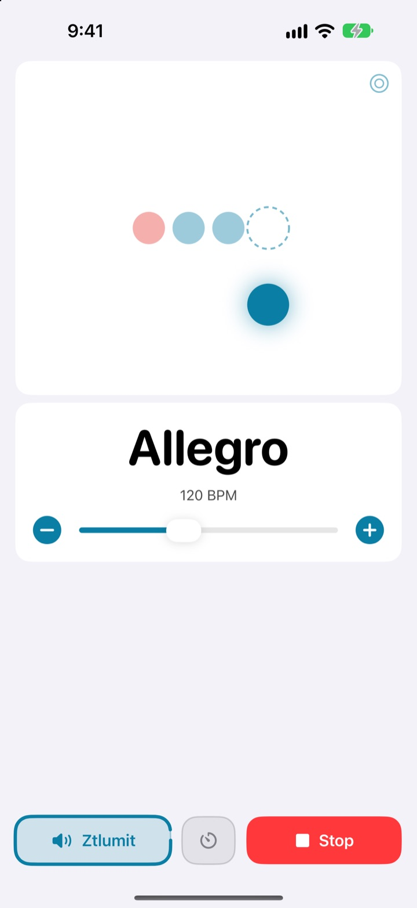
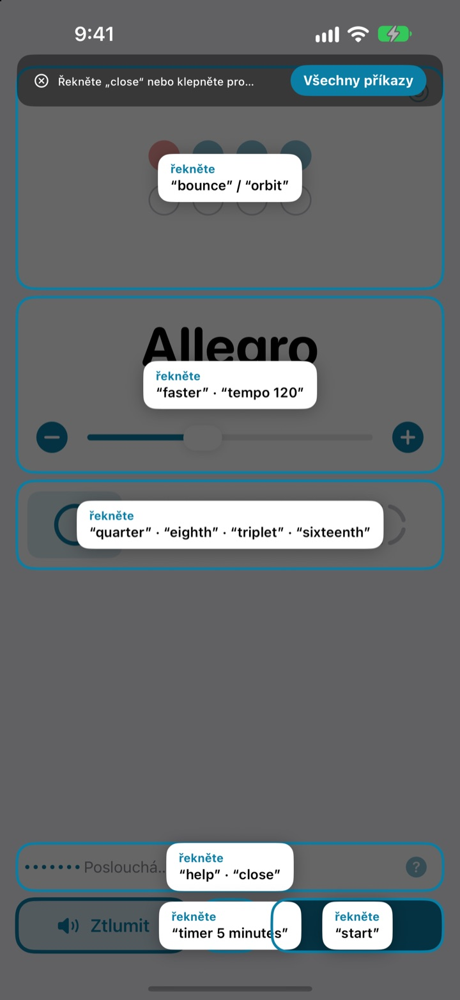
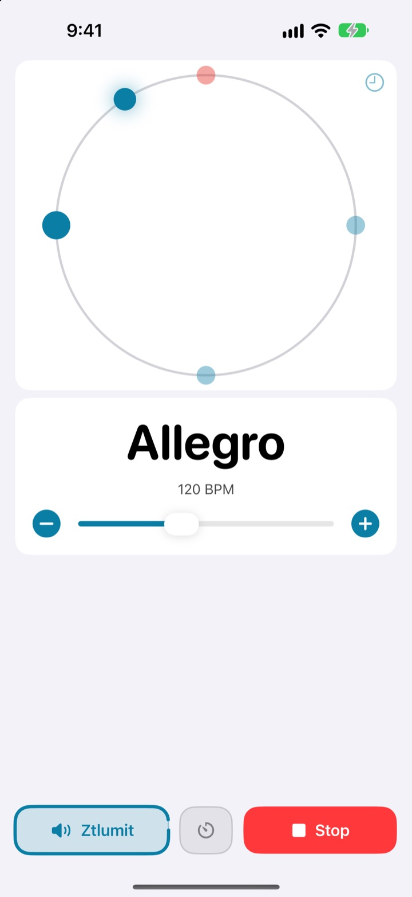
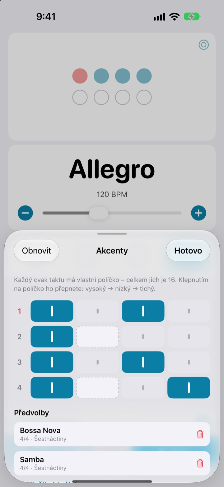

Ruce na nástroji,
tempo hlasem
Řekněte uprostřed fráze faster a metronom zrychlí. Nemusíte sahat po displeji ani přestávat hrát. Příkazy se říkají anglicky.
Plný metronom i hlasové ovládání jsou zdarma.

Zkuste to nahlas
Klepněte na frázi, nebo zapněte mikrofon a řekněte ji anglicky. Zesilte zvuk, metronom kliká.
Ztratili jste groove jen kvůli malé změně tempa?
Odložit smyčec, vzít trsátko do zubů, dvakrát klepnout na displej, a pocit, který jste právě chytili, je pryč. Not My Tempo změní tempo jediným slovem a vy hrajete dál ve stejné pozici.
Řeknete a klikání poslechne
Krátká anglická slova jako start, faster nebo tempo 120. Aplikace poslouchá hned po otevření, bez zapínání Ovládání hlasem v iOS či nastavení zpřístupnění.
Zapomněli jste příkaz? Řekněte help a všechny fráze se ukážou na obrazovce.

Dobu vidíte i očima
Vyberte si odraz, oběžnou dráhu nebo kruh. První doba svítí červeně a kliká hlasitěji.
Klepejte do rytmu na oběžnou dráhu a uvidíte, jak přesně trefujete.

Akcenty uložené pro každou skladbu
Nastavte každý cvak v taktu jako vysoký, nízký nebo tichý a uložte ho jako předvolbu. Rytmus bossa novy nebo samby sestavíte jednou a příště ho jen vyberete. (Pro)

Začnete ve třech krocích
- 1
Otevřete aplikaci
Hned začne poslouchat.
- 2
Povolte mikrofon
O přístup k mikrofonu a rozpoznávání řeči požádá jen jednou.
- 3
Mluvte nebo klepejte
Každý příkaz má i tlačítko na obrazovce.
Co můžete říct
- start · stop
- spustit, zastavit
- faster · slower
- rychleji nebo pomaleji o 5 BPM
- up · down
- rychleji nebo pomaleji o 1 BPM
- tempo 120
- rovnou zvolené tempo
- double · half
- dvakrát rychleji, dvakrát pomaleji
- three beats
- změnit takt
- quarter · eighth · triplet · sixteenth
- čtvrťové noty, osminy, trioly, šestnáctiny
- louder · quieter · mute
- klikání hlasitěji, tišeji, ztlumit
- volume 60
- hlasitost v procentech
- bounce · orbit
- přepnout zobrazení doby
- timer 5 minutes
- časovač cvičení
- practice
- postupně zvyšovat tempo během cvičení (Pro)
- tune
- otevřít ladičku (Pro)
- help
- zobrazit všechny příkazy
- close · done
- zavřít otevřený panel
Rozpoznávání řeči funguje v angličtině (USA), proto se příkazy říkají anglickými slovy. Aplikace je v češtině a každý příkaz funguje i klepnutím.
Metronom je zdarma, Pro když chcete víc
Zdarma
- Všechny hlasové příkazy
- Takty od 1 do 8 dob se zdůrazněnou první dobou
- Čtvrťové noty, osminy, trioly a šestnáctiny
- Odraz, oběžná dráha a kruh
- Tap tempo a kontrola rytmu
- Časovač cvičení
Not My Tempo Pro
- Režim cvičení: přidává pár BPM každých pár taktů, dokud nedosáhnete cílového tempa
- Editor akcentů s předvolbami pro každou skladbu
- Chromatická ladička
Roční předplatné s bezplatnou zkušební dobou, nebo jednorázový nákup navždy
Hlasové ovládání a funkce zpřístupnění zůstanou zdarma pro všechny. Pokud jste aplikaci koupili ještě před příchodem Pro, všechny funkce Pro už máte.
Časté otázky
Můžu mluvit česky?
Rozpoznávání řeči funguje v angličtině (USA), takže příkazy jsou krátká anglická slova jako start nebo faster. Rychle si je zapamatujete a každý příkaz funguje i tlačítkem.
Aplikace mě neslyší.
Zkontrolujte, že u mikrofonu svítí „Poslouchá“. Pokud ne, klepněte na „Poslouchat“. V hlučné místnosti nebo při hraní přes reproduktory použijte sluchátka, aby se klikání nedostávalo do mikrofonu.
Poslouchání se samo vypnulo.
Kvůli úspoře baterie se poslouchání vypne, když pár minut nezazní žádný příkaz. Klepnutím na „Poslouchat“ ho znovu zapnete.
Tempo vyšlo poloviční nebo dvojnásobné.
Řekněte double nebo half a je to opravené.
Jak se používá ladička?
Řekněte tune nebo klepněte na tlačítko s vlnou na kartě tempa. Zahrajte tón: když ukazatel dopadne do zeleného pásma, máte naladěno. Ven se dostanete slovem close.
Už používám Ovládání hlasem v iOS.
Vypněte mikrofon aplikace a ovládejte ji názvy tlačítek. Každý ovládací prvek má popisek pro VoiceOver.
Posílá se můj hlas někam?
Ne. Řeč se rozpoznává v zařízení a nikdy se nenahrává, neukládá ani neodesílá. Metronom, hlasové ovládání i ladička fungují bez internetu.
Jak zrušit předplatné?
V Nastavení > Účet Apple > Předplatné. Roční předplatné se obnovuje automaticky, pokud ho nezrušíte nejméně 24 hodin před koncem aktuálního období. Nákup navždy je jednorázová platba.
Dotazy a připomínky posílejte na leeo@kakao.com.